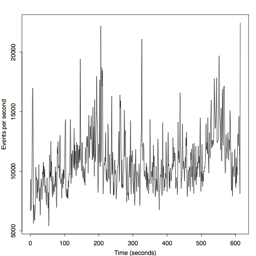

High-Level Network Traffic Profiling
When it comes to understanding your network traffic in terms of volume or packet rate, the obvious approach is to count packets or add up their size. In this article, I describe a higher-level alternative to profiling network traffic based on events generated by the Bro network security monitor. Most of these events represent activity higher up the network stack, e.g., at the transport and application layer. The difference between traditional and event profiling is visualized in the Figure on the right. Conventional tools munge on packets at the network layer; some may also reassemble transport-layer streams. Bro’s event engine additionally generates protocol-specific events that reflect the applications communication, which gives the user a much richer description of what’s going on in the network.
The size of an event is given by the size of all its arguments (plus a little bit of meta information, e.g., creation timestamp). How do we get such meta data though? To date, Bro has limited meta programming support, which makes it difficult to obtain these details. Thus I added a new meta event to Bro, which the core generates in addition to each regular event. Here is an example that shows how to handle this event:
event meta_event(name: string, timestamp: time, size: count)
{
print fmt("%s\t%f\%d", name, timestamp, size);
}
You can find a more complete example that writes information about all events
to a separate file meta.log in my brospects repository. To use
this meta programming functionality, you need to use the topic branch
topic/matthias/meta-analysis. A fresh install might look like this:
git clone --recursive git://git.bro-ids.org/bro.git
git checkout topic/matthias/meta-analysis
./configure --prefix=PREFIX && make && make install
To give a real world example of what you can do with this functionality, let us analyze a trace captured at UC Berkeley (UCB) on October 17, 2011, at 2:35pm for 10 minutes. At UCB’s network border, a Bro cluster of 26 nodes monitors two 10 Gbps links. The full packet trace has a size of 219 GB and contains 284 million packets in 6.5 million connections. When looking at the trace sizes on the 26 nodes, we observe a median size of 8.1 GB () in a range from 6.3 to 15 GB.
Let us inspect one 7.7 GB trace of a single cluster node in more detail. The two Figures below show the number of events per second, once over time and once their empirical distribution.


In the above Figure, we see median rates of 10,760 (), which correspond to 13.4 MB/sec. The peak rates is 22,460, or 35 MB/sec. The next figure shows the distribution of event types. Because most of our traffic at UCB is HTTP, it is not unsurprising that the HTTP events account for the largest share.

In the future, we hope to add more meta programming and introspection functionality to Bro. Not only does this help to tune the scripts, but it also makes it possible to gain new insight into your network that goes beyond packet-level activity.
Load Comments